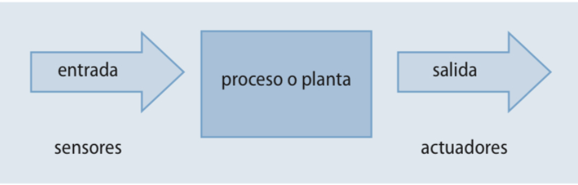

Los sistemas automáticos se basan en sustituir a los operadores humanos por dispositivos mecánicos o electrónicos en un proceso. En todos los ámbitos se incrementa la automatización de los procesos, con objeto de mejorar la calidad de los productos, aumentar la producción, evitar situaciones de riesgo para el ser humano, etc. Así, el control automático es esencial en operaciones industriales como el control de presión, temperatura o humedad en industrias de procesos; el maquinado y armado de piezas en la industria de fabricación, etc.
Existen muy diversos sistemas de control que pueden ir desde un simple tostador de pan hasta un sistema de defensa antiaéreo, pasando por una lavadora, el control de velocidad de un motor, el control de temperatura de una vivienda, etc.
La Teoría de Regulación Automática o Teoría de Control estudia el comportamiento dinámico de un sistema frente a órdenes de mando o perturbaciones.
Definiciones básicas
Podemos preguntarnos qué son perturbaciones y qué diferencia tienen con una orden de mando. Para fijar conceptos, vamos a ver estas y otras definiciones básicas de la teoría de control:
- Señal: información que representa una determinada magnitud física, así como su evolución, generalmente con el tiempo. Las magnitudes físicas se convierten en señales con la ayuda de unos dispositivos denominados transductores.
- Planta o sistema controlado: conjunto de componentes o productos que tienen una determinada función o aplicación. Son componentes aptos para realizar una cierta transferencia de flujo (de material, de energía, de información, etc.) y son objeto de la actuación del sistema de control.
- Proceso: conjunto de operaciones a realizar para conseguir un fin determinado.
- Sistema de control: conjunto de componentes que actúan juntos para realizar el control. Antiguamente eran mecánicos y físicos, pero en la actualidad se suelen implementar mediante la electrónica y la informática.
- Mando o selector de entrada: elemento que permite fijar el valor deseado para una variable, una señal o una orden. Por ejemplo, un potenciómetro.
- Entrada o señal de mando: el valor de la variable, señal u orden producida por el mando o selector.
- Señal de referencia o consigna: la generada por un transductor a partir de la señal de mando para que sea capaz de gobernar la unidad de control.
- Unidad de control, controlador o regulador: unidad que genera una acción de gobierno sobre el sistema controlado para producir una salida deseada sin la intervención del operador.
- Salida, señal o variable controlada: es el valor generado a la salida de la planta. Debe mantenerse en un valor fijado de antemano mediante la acción de la unidad de control.
- Perturbaciones: toda señal indeseada que intervenga de forma adversa en el funcionamiento de un sistema. Pueden ser:
- Internas: se producen dentro del propio sistema.
- Externas: se generan fuera del sistema y constituyen una entrada más.
- Medidor o captador: elemento transductor que facilita, a partir de la variable de salida, un resultado comparable con la señal de entrada. Mide el valor real alcanzado por una variable. Por ejemplo, la boya que detecta el nivel de agua en una cisterna de baño.
- Actuador: dispositivo que puede intervenir sobre la planta o proceso a controlar, con potencia elevada.
Estructura de un sistema automático
Un sistema automático consta básicamente de tres bloques: entrada, proceso y salida.

- La entrada es una señal que contiene información, generalmente recogida por una magnitud física, y que pone en funcionamiento el proceso.
- El proceso o planta es el conjunto de fases o acciones que lleva a cabo el sistema para conseguir una función.
- La salida es la señal de respuesta, generada al final del sistema automático y que generalmente debe mantenerse en un rango gracias al control del propio sistema.